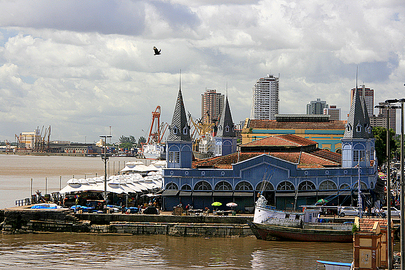
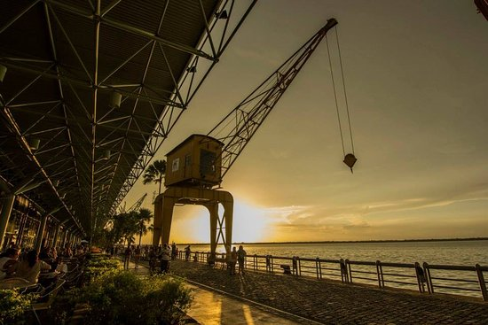
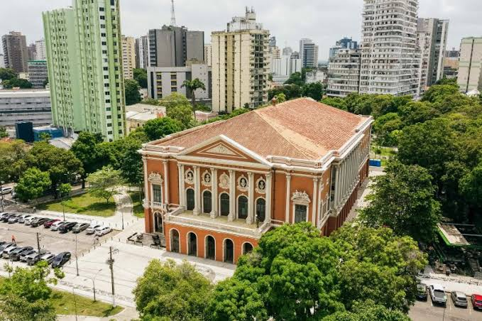
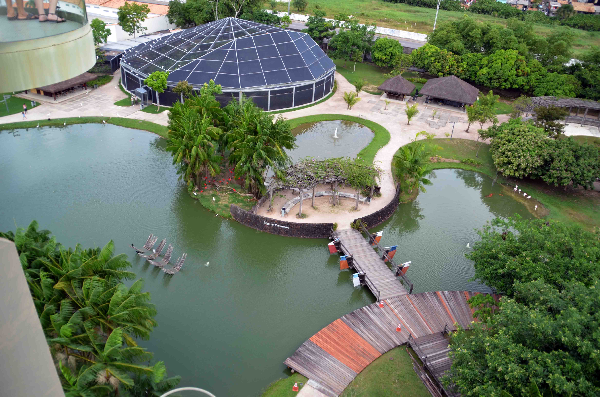

Bienvenido a Belém.
Conozca la metrópolis de la Amazonía. Una ciudad donde la historia, la naturaleza y una de las gastronomías más ricas del mundo se encuentran.
Fundada en 1616, Belém es la capital del estado de Pará y la principal puerta de entrada a la Amazonía brasileña. Bañada por la Bahía de Guajará, la ciudad ofrece a los participantes de CHAGS 14 una experiencia única, combinando el rigor de los debates científicos con la vivencia en un territorio de profunda herencia indígena, arquitectura europea del ciclo del caucho y una cultura vibrante.
Cultura y Turismo
Lugares imprescindibles para visitar durante su estancia. Haga clic en las imágenes para ampliarlas.

Mercado Ver-o-Peso
La mayor feria al aire libre de América Latina. Un complejo histórico donde encontrará hierbas medicinales, peces amazónicos, artesanía y la esencia de la cultura paraense a orillas del río.

Estação das Docas
Antiguo puerto fluvial restaurado que se ha transformado en un moderno complejo turístico. Excelente opción para el final de la tarde, con restaurantes de alta gastronomía, cervezas artesanales y vistas a la bahía.

Theatro da Paz
Inaugurado en 1878 durante el Ciclo del Caucho, es uno de los teatros más hermosos de Brasil, con arquitectura neoclásica y materiales importados de Europa en el apogeo de la Belle Époque amazónica.

Mangal das Garças
Un parque zoobotánico en el corazón de la ciudad que reproduce los diferentes ecosistemas de la Amazonía, albergando aves en libertad, un mariposario y el Faro de Belém.
Culinaria Paraense
Reconocida internacionalmente y premiada por la UNESCO, la gastronomía de Belém es una fusión de ingredientes forestales ancestrales.
Açaí Tradicional
A diferencia del resto del mundo, en Belém el açaí se consume puro, sin azúcar, sirviendo como acompañamiento principal para pescado frito, camarones o charqui, siempre con harina de yuca.
Tacacá
Caldo indígena servido caliente en una cuia (cuenco tradicional), hecho con tucupí (jugo amarillo de la yuca brava), almidón de tapioca, hojas de jambu (que causan adormecimiento en la boca) y camarón seco.
Maniçoba
Conocida como la "feijoada amazónica", tarda hasta siete días en prepararse, cocinando las hojas molidas de la yuca brava con diversas carnes ahumadas y saladas.
Filhote y Tambaqui
Pescados nobles de los ríos amazónicos, generalmente servidos asados a la brasa, en calderetas (guisos) o acompañados de salsas regionales y arroz con jambu.
Sostenibilidad y Medio Ambiente en la Amazonía
Acoger CHAGS 14 en Belém sitúa el evento en el epicentro de los debates globales sobre conservación forestal, bioeconomía y los derechos de los pueblos originarios y comunidades tradicionales.
La Selva y el Estuario
Belém está rodeada de aguas e islas que componen el ecosistema de llanura aluvial estuarina. La relación entre la urbe y la selva amazónica es un laboratorio vivo de manejo sostenible y adaptación humana.
Bioeconomía y Saberes
El estado de Pará lidera iniciativas de transición hacia una economía basada en el bosque en pie, valorando el extractivismo sostenible del açaí, cacao nativo, aceites y esencias manejadas por generaciones.
Protagonismo Tradicional
Pueblos indígenas, ribereños, quilombolas y extractivistas son los guardianes históricos de la sociobiodiversidad. El congreso actúa como puente para integrar estos saberes ancestrales a las discusiones científicas globales.